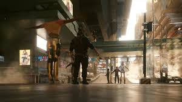

Bug Report Example 3: Cyberpunk 2077 - T-Pose Glitch
Details:
Title: NPCs Appear in T-Pose During Cutscenes
Priority: High
Severity: Critical
Description:
During certain cutscenes in Cyberpunk 2077, NPCs freeze in a T-pose instead of performing their designated animations. This glitch disrupts the cinematic experience and breaks immersion for the player.
Steps to Reproduce:
Launch Cyberpunk 2077.
Start the "Heist" mission.
Play through the cutscenes in the mission.
Observe NPCs randomly switching to a T-pose during certain scenes.
Expected Behavior:
NPCs should execute their assigned animations seamlessly during cutscenes, preserving the intended cinematic experience.
Observed Behavior:
NPCs freeze in a T-pose instead of performing their animations, causing visual and narrative disruptions during cutscenes.
Root Cause:
The T-pose glitch was caused by an animation loading error, where specific NPC assets failed to synchronize with cutscene triggers. As a fallback, NPCs defaulted to a T-pose when animation data was unavailable.
Solution:
Investigation:
Debugged animation event logs and identified missing asset preloading during specific cutscenes.
Confirmed that the absence of animation data led NPCs to default to a T-pose.
Fix Implementation:
Updated the animation system to preload all necessary assets before triggering cutscenes.
Introduced a fallback mechanism to load default animations instead of defaulting to a T-pose.
Testing:
Replayed multiple cutscenes, including the "Heist" mission, to verify that animations loaded correctly.
Conducted stress tests with a high number of NPCs onscreen to ensure stability under load.
Resolution:
The bug was resolved in Patch 1.21. NPC animations now load properly during cutscenes, ensuring a smooth and immersive cinematic experience.

Bug Report: Cyberpunk 2077 - Enemies Seeing Through Walls or when died
Details:
Title: Enemies Spot Players Through Walls or Detect Dead Bodies
Priority: High
Severity: Moderate
Description:
In certain scenarios, enemies in Cyberpunk 2077 exhibit unintended behavior:
Enemies can detect the player through walls, breaking stealth mechanics and making stealth-focused gameplay challenging.
Dead bodies are sometimes not registered as "dead" by the game engine, causing enemies to react to them as if they were still alive.
These issues were frequently encountered during missions, including one in an Arasaka warehouse, but may occur in various locations throughout the game.
Steps to Reproduce:
Launch Cyberpunk 2077 and load any save file.
Engage in a stealth mission (e.g., within an Arasaka warehouse).
Hide behind walls or objects and observe enemies detecting the player through barriers.
Kill an enemy and leave the body in a visible location.
Observe other enemies reacting to the dead body as though it were alive.
Expected Behavior:
Enemies should:
Only detect the player when they have a clear line of sight.
React appropriately to dead bodies, acknowledging their status as deceased and not treating them as active threats.
Observed Behavior:
Enemies detect the player through walls, regardless of line-of-sight mechanics.
Enemies react to dead bodies as if they were still alive, breaking immersion and stealth gameplay mechanics.
Root Cause:
Based on preliminary analysis, the following root causes are suspected:
A miscalculation in the line-of-sight detection system for enemy AI, allowing them to "see" through walls.
An incorrect flagging system for deceased bodies, causing the game to consider them as alive in certain scenarios.
Solution:
Investigation:
Debugged AI vision logic to determine how enemies detected the player through barriers.
Analyzed body status flagging in the game engine to identify inconsistencies in the way dead bodies are registered.
Fix Implementation:
Adjusted the line-of-sight detection code to ensure enemies only spot players when an unobstructed view exists.
Corrected the body status flagging system to accurately mark bodies as deceased and remove them from active threat detection.
Testing:
Reproduced scenarios across various missions, including the Arasaka warehouse, to confirm the fixes resolved both issues.
Conducted regression testing to ensure no new bugs were introduced to the AI vision system or stealth mechanics.
Resolution:
These issues were resolved in Patch 1.1.8. Enemies now properly rely on line-of-sight mechanics to detect players and appropriately register dead bodies as non-threats. Stealth gameplay is restored to its intended functionality.
Bug Report Example 3: Invisible or Missing NPCs/Objects
Details:
Title: Invisible or Missing NPCs/Objects in the Game World
Priority: Medium
Severity: Minor
Description:
Cyberpunk 2077 may occasionally fail to load NPCs, vehicles, or other assets in the game world. Players have reported seeing NPCs interacting with invisible objects, ghostly glasses floating midair without anyone holding them, and cars disappearing entirely. Although these glitches are primarily visual and do not directly affect gameplay mechanics, they disrupt immersion in the open-world experience.
Steps to Reproduce:
Launch Cyberpunk 2077.
Load a save file and enter a crowded area such as a marketplace or busy street.
Observe NPCs and objects in the environment.
Note instances of missing NPCs, cars, or objects like glasses floating without a holder.
Expected Behavior:
All NPCs, vehicles, and objects in the environment should be visible and interactable as intended, contributing to a seamless open-world experience.
Observed Behavior:
NPCs, cars, and objects intermittently fail to load, resulting in floating glasses, invisible cars, or NPCs interacting with non-existent objects. Reloading the game save often resolves the issue temporarily.
Root Cause:
Asset streaming and memory management issues caused certain game assets to fail during loading. When too many objects were requested simultaneously, the system prioritized gameplay-critical assets over secondary visuals.
Solution:
Investigation:
Used debug tools to monitor asset streaming and memory allocation during busy scenes.
Identified bottlenecks in the asset-loading system, particularly during high-demand scenarios.
Fix Implementation:
Optimized the asset-streaming system to load both gameplay-critical and secondary assets efficiently.
Introduced a prioritization queue to ensure all NPCs, vehicles, and objects in the player's immediate vicinity are loaded correctly.
Testing:
Simulated high-demand scenarios with crowded areas and fast travel to stress-test the updated system.
Verified that all assets loaded correctly across multiple save files and hardware configurations.
Resolution:
Fixed in Patch 1.22. Asset streaming has been optimized, significantly reducing the occurrence of missing NPCs, cars, and objects.